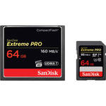
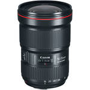
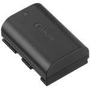
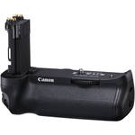
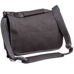
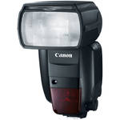

|

SanDisk 64GB Extreme PRO
CompactFlash & 64GB
$99.99
|

Canon EF 16.35mm f/2.8L III
USM Lens
$1,999.00
|
Canon CarePAK PLUS 2-Year
Service Plan for EOS DSLRs
$169.99
|
Canon CarePAK PLUS 3-Year
Service Plan for EOS DSLRs
$243.99
|
|

Canon LP-E6N Lithium-Ion
Battery Pack (7.2V, 1865mAh)
$64.00
|

Canon BG-E20 Battery Grip
for EOS 5D Mark IV
$309.00
|

Think Tank Photo
Retrospective 7 Shoulder
$162.75
|

Canon Speedlite 600EX II-RT
$479.00
|